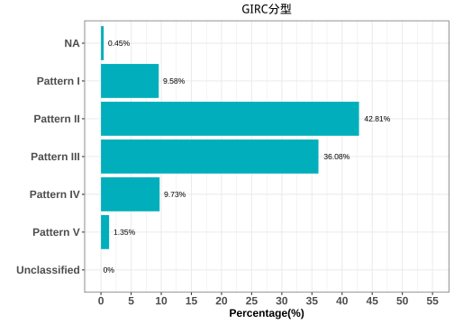

1.6 分層分析-2: 男性:睪固酮(Testosterone)
依據睪固酮(Testosterone)初始狀態進行分層分析，分成二個組別：
- 睪固酮低下: (小於 <350 ng/dl)
- 睪固酮正常: (大於 >350 ng/dl)
男性睪固酮分組&年齡分佈
|
|
|
相關分析(Correlation Analysis)
睪固酮(Testosterone) x 初始狀態(Baseline)
男性荷爾蒙「睪固酮」血中濃度與「體重」、「體脂」，以及「空腹血糖」、「空腹胰島素」和「胰島素抗性」(IR)具有顯著負相關。換句話說，相較於「睪固酮」濃度正常的人，「睪固酮」低下者傾向有較高的「體重」、「體脂」，「空腹血糖」、「空腹胰島素」和「胰島素抗性」(IR)也較高。

成效(Effectiveness)


成效(%)-Blood

| Low | Normal | 顯著差異 | |
|---|---|---|---|
| 人數 | 32 | 17 | |
| 體重(T0) | 97.13 ± 2.88 | 88.12 ± 2.31 |
|
| BMI(T0) | 31.73 ± 1.02 | 29.2 ± 0.64 | ns |
| 體脂重(T0) | 33.88 ± 2.18 | 25.14 ± 1.45 |
|
| 體脂率(T0) | 34.06 ± 1.27 | 28.25 ± 1.17 | ** |
| 骨骼肌質量指數(T0) | 8.84 ± 0.15 | 8.81 ± 0.11 | ns |
| 骨骼肌率(T0) | 37.26 ± 0.73 | 40.74 ± 0.69 | ** |
| 內臟脂肪面積(T0) | 139.29 ± 8.73 | 97.06 ± 5.88 |
|
| 腰圍(T0) | 108.61 ± 2.54 | 102.04 ± 4.13 | ns |
| 除脂體重(T0) | 63.25 ± 1.27 | 62.98 ± 1.38 | ns |
| 基礎代謝率(T0) | 1736.12 ± 27.5 | 1730.24 ± 29.76 | ns |
| 糖化血色素(T0) | 5.88 ± 0.15 | 5.66 ± 0.08 | ns |
| 空腹血糖(T0) | 97 ± 4.34 | 87.76 ± 2.1 | ns |
| 空腹胰島素(T0) | 17.57 ± 1.61 | 16.29 ± 2.2 | ns |
| 胰島素阻抗值(T0) | 4.44 ± 0.58 | 3.55 ± 0.48 | ns |
| β細胞功能(T0) | 211.44 ± 18.67 | 270.04 ± 42.33 | ns |
| 三酸甘油脂(T0) | 194.81 ± 19.31 | 153.35 ± 19.96 | ns |
| 總膽固醇(T0) | 195.16 ± 6.41 | 205.59 ± 11.01 | ns |
| 高密度脂蛋白(T0) | 44.6 ± 1.95 | 43.38 ± 2.26 | ns |
| 低密度脂蛋白(T0) | 119.84 ± 5.21 | 142.65 ± 9.64 | ns |
| 解脂脢(T0) | 27.84 ± 2.87 | 23.29 ± 3.21 | ns |
| 體重(T1) | 90.53 ± 2.85 | 81.61 ± 2.42 | ns |
| BMI(T1) | 29.6 ± 1.03 | 27.04 ± 0.67 | ns |
| 體脂重(T1) | 29.35 ± 2.15 | 20.48 ± 1.49 | ** |
| 體脂率(T1) | 31.42 ± 1.37 | 24.69 ± 1.26 | ** |
| 骨骼肌質量指數(T1) | 8.55 ± 0.15 | 8.53 ± 0.12 | ns |
| 骨骼肌率(T1) | 38.64 ± 0.78 | 42.64 ± 0.72 | ** |
| 內臟脂肪面積(T1) | 111.12 ± 7.72 | 79.74 ± 5.87 |
|
| 腰圍(T1) | 101.91 ± 2.61 | 94.78 ± 4.52 |
|
| 除脂體重(T1) | 61.18 ± 1.22 | 61.14 ± 1.37 | ns |
| 基礎代謝率(T1) | 1691.44 ± 26.39 | 1690.47 ± 29.47 | ns |
| 糖化血色素(T1) | 5.41 ± 0.08 | 5.38 ± 0.07 | ns |
| 空腹血糖(T1) | 77.28 ± 1.69 | 76.29 ± 2.21 | ns |
| 空腹胰島素(T1) | 10.49 ± 1.1 | 11.68 ± 2.55 | ns |
| 胰島素阻抗值(T1) | 2.04 ± 0.22 | 2.33 ± 0.55 | ns |
| β細胞功能(T1) | 265.53 ± 49.99 | 235.26 ± 76.33 | ns |
| 三酸甘油脂(T1) | 152.41 ± 13.93 | 121 ± 14.7 | ns |
| 總膽固醇(T1) | 198.19 ± 8.63 | 212.24 ± 15.26 | ns |
| 高密度脂蛋白(T1) | 41.85 ± 1.93 | 39.31 ± 2.08 | ns |
| 低密度脂蛋白(T1) | 129.09 ± 7.8 | 147.18 ± 12.22 | ns |
| 解脂脢(T1) | 42 ± 6.4 | 32.35 ± 5.92 | ns |
| 年齡 | 41.66 ± 2.26 | 35.76 ± 1.9 | ns |
| 飲食紀錄完成率(%) | 67.91 ± 5.6 | 63.75 ± 8.83 | ns |
| 紀錄數量 | 156.25 ± 26.67 | 217.72 ± 49.8 | ns |
| 上傳照片張數 | 152.54 ± 26.84 | 124.16 ± 24.12 | ns |
| 碳水攝取率(E%) | 17.52 ± 1.1 | 18 ± 1.91 | ns |
| 蛋白攝取率(E%) | 27.46 ± 0.47 | 28.31 ± 0.76 | ns |
| 脂肪攝取率(E%) | 55.02 ± 0.9 | 53.69 ± 1.35 | ns |
| 總攝取熱量(日) | 798.35 ± 79.48 | 733.09 ± 118.33 | ns |
| 綠燈率 | 83.6 ± 2.52 | 76.44 ± 5 | ns |
| 黃燈率 | 12.83 ± 1.63 | 22.94 ± 5.05 | ns |
| 紅燈率 | 3.57 ± 1.41 | 0.61 ± 0.42 | ns |
| 水果(日) | 0.03 ± 0.01 | 0.07 ± 0.03 | ns |
| 蔬菜(日) | 2.49 ± 0.3 | 2.42 ± 0.43 | ns |
| 全穀雜糧(日) | 1.26 ± 0.18 | 1 ± 0.21 | ns |
| 蛋豆魚肉(日) | 7.06 ± 0.73 | 6.8 ± 1.13 | ns |
| 乳品(日) | 0.02 ± 0.01 | 0.03 ± 0.01 | ns |
| 油脂(日) | 2.91 ± 0.31 | 2.49 ± 0.42 | ns |
| ∆體重 | 6.6 ± 0.51 | 6.51 ± 0.54 | ns |
| ∆BMI | 2.14 ± 0.16 | 2.16 ± 0.18 | ns |
| ∆體脂重 | 4.53 ± 0.33 | 4.66 ± 0.57 | ns |
| ∆體脂率 | 2.64 ± 0.27 | 3.56 ± 0.56 | ns |
| ∆骨骼肌質量指數 | -0.29 ± 0.04 | -0.28 ± 0.04 | ns |
| ∆骨骼肌重 | -1.27 ± 0.22 | -1.15 ± 0.21 | ns |
| ∆內臟脂肪面積 | 21.67 ± 1.66 | 24.81 ± 2.59 | ns |
| ∆腰圍 | 6.7 ± 0.63 | 7.26 ± 0.72 | ns |
| ∆除脂體重 | 2.07 ± 0.35 | 1.84 ± 0.35 | ns |
| ∆基礎代謝率 | -44.69 ± 7.6 | -39.76 ± 7.33 | ns |
| ∆糖化血色素 | 0.47 ± 0.12 | 0.28 ± 0.06 | ns |
| ∆空腹血糖 | 19.72 ± 4.15 | 11.47 ± 3.14 | ns |
| ∆空腹胰島素 | 6.61 ± 1.63 | 4.61 ± 1.93 | ns |
| ∆胰島素阻抗值 | 2.4 ± 0.58 | 1.22 ± 0.44 | ns |
| ∆β細胞功能 | 54.08 ± 47.6 | -34.78 ± 72.16 | ns |
| ∆三酸甘油脂 | 42.41 ± 14.69 | 32.35 ± 17.93 | ns |
| ∆總膽固醇 | -3.03 ± 7.37 | -6.65 ± 12.9 | ns |
| ∆高密度脂蛋白 | -2.75 ± 1.54 | -4.06 ± 1.82 | ns |
| ∆低密度脂蛋白 | -9.25 ± 6.51 | -4.53 ± 10.47 | ns |
| ∆解脂脢 | 14.16 ± 5.13 | 9.06 ± 3.34 | ns |
| ∆體重(%) | 6.9 ± 0.54 | 7.48 ± 0.64 | ns |
| ∆BMI(%) | 6.9 ± 0.54 | 7.45 ± 0.64 | ns |
| ∆體脂重(%) | 14.59 ± 1.21 | 19.36 ± 2.35 | ns |
| ∆體脂率(%) | 8.35 ± 0.93 | 13.01 ± 2.1 |
|
| ∆骨骼肌質量指數(%) | -3.31 ± 0.45 | -3.22 ± 0.5 | ns |
| ∆骨骼肌重(%) | -3.47 ± 0.6 | -3.17 ± 0.59 | ns |
| ∆內臟脂肪面積(%) | 16.44 ± 1.12 | 26.06 ± 2.27 |
|
| ∆腰圍(%) | 6.25 ± 0.58 | 7.4 ± 0.74 | ns |
| ∆除脂體重(%) | 3.21 ± 0.54 | 2.9 ± 0.55 | ns |
| ∆基礎代謝率(%) | -2.53 ± 0.43 | -2.29 ± 0.42 | ns |
| ∆糖化血色素(%) | 7.18 ± 1.36 | 4.87 ± 1.06 | ns |
| ∆空腹血糖(%) | 18.04 ± 2.32 | 12.14 ± 3.58 | ns |
| ∆空腹胰島素(%) | 29.47 ± 7.08 | 32.48 ± 9 | ns |
| ∆胰島素阻抗值(%) | 40.95 ± 6.53 | 37.56 ± 10.17 | ns |
| ∆β細胞功能(%) | 43.26 ± 21.19 | -4.89 ± 34.92 | ns |
| ∆三酸甘油脂(%) | 14.57 ± 5.08 | 7.49 ± 11.35 | ns |
| ∆總膽固醇(%) | -2.6 ± 3.85 | -4.07 ± 6.04 | ns |
| ∆高密度脂蛋白(%) | -5.01 ± 3.44 | -7.95 ± 3.99 | ns |
| ∆低密度脂蛋白(%) | -9.23 ± 6.05 | -5.07 ± 7.34 | ns |
| ∆解脂脢(%) | 58.3 ± 14.63 | 41.09 ± 12.38 | ns |
|
Significance: Comparison: Testosterone in male population. |